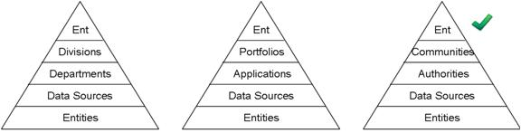
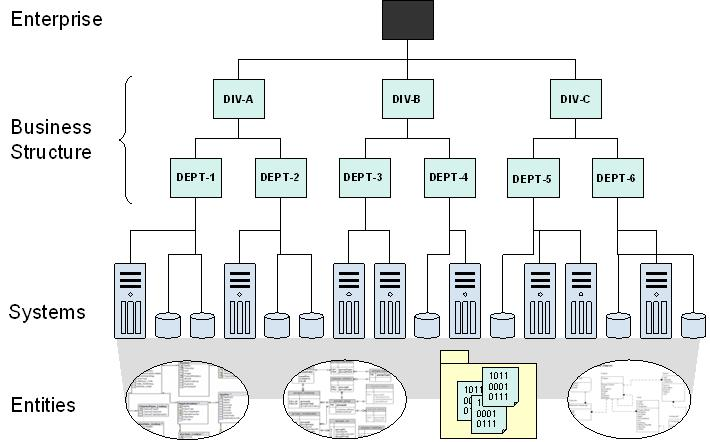
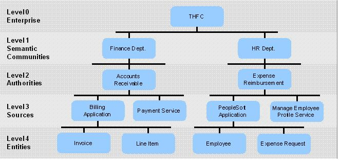
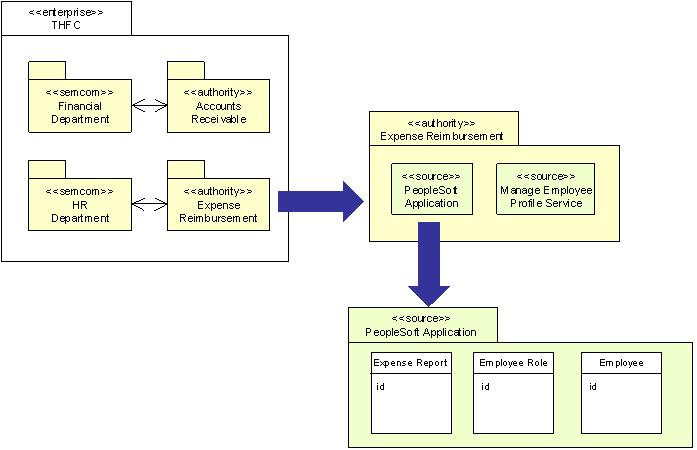

OUM |
Technique Overview |
||
Method Navigation |
Current Page Navigation |
||
|
|
||||||||
The purpose of this technique is to define the Data Ownership approach to Data Modeling.
First you define the means by which enterprise-level data modeling will be done, and the top-level model that can be applied at the enterprise level for the purpose of organizing data modeling activities. A skeleton data model will be created as the foundation to tie together all the project-based data modeling efforts. The skeleton model can be populated via strategic data discovery and modeling, or it can be populated incrementally as each new project takes place.
This technique involves defining and building the base data model skeleton. There are several different approaches to defining the structure. Ultimately the structure will have data entities at the lowest level, the sources of data, such as applications, SOA services, file systems, etc., at the next highest level, building up to the top level which will represent the enterprise. This type of structure provides the ability to visualize how data is organized and dispersed within the enterprise.
Some common examples for a model structure are shown below. The structure on the left follows a business hierarchy, while the structure in the middle follows a project delivery hierarchy. Note that the number of layers and the categories for each layer are variable. Though these two models are intuitive and easy to recognize, aside from the two lowest layers the structure does not have any special meaning for data modeling. The third model, shown on the right, does align with common data principles, and is the model recommended in this technique.

The process for creating this model is shown below. It starts at the Data Source layer and works outward. The reason is that data sources are easy to identify, much more so than authorities and communities.
Enterprise Domain Model (Data Model) - Use of this technique results in a data model as described in the third pyramid above.
No. |
Step | Component | Component Description |
|---|---|---|---|
1 |
Identify Key Data Sources. | Key Data Sources | Key data sources are systems, applications, and SOA services that provide access to data. |
2 |
Identify Key Data Entities. | Key Data Entities | Key Data Entities are those entities that can stand alone. That is, they can exist independently of other entities. |
3 |
Identify Data Authorities. | Data Authorities | Data Authorities are the person(s) responsible for the stewardship of data. |
4 |
Define the Semantic Communities. | Semantic Communities | Semantic Communities are identifiable groups of information consumers that have a shared understanding of a set of related concepts, as captured in a data glossary and conceptual models. Consumers may be people or information systems. |
5 |
Capture the Enterprise Data Model. | Enterprise Data Model | The Enterprise Data Model contains key entities, data sources, authorities, semantic communities, and the relationships between them. |
| 6 | Update Repository. |
Data sources are systems, applications, and SOA services that provide access to data. Sources generally provide access to persisted data, such as entities stored in a database, files in a file system, content in a Content Management (CM) system, etc. Sources may also offer access to transient data, such as system events, streaming data feeds, and messages from a subscription, that is store-and-forward queue.
The process for locating data sources may vary depending on the size of the enterprise (or business scope). A direct approach is to ask enterprise architects for a list of data sources. Another option is to use a top-down business decomposition approach. Starting at the enterprise level, decompose the business hierarchy down into smaller and smaller business units, which eventually own and operate systems that represent applications, databases, and SOA services that are sources of data.
An example business hierarchy model is shown below.

Once the systems have been identified, each system can be examined to catalog the key data entities contained within it. Key entities are defined as those that can stand alone. That is, they can exist independently of other entities. For instance, employee, customer, and expense report are examples of key entities, while dependent entities such as address, contact, and expense item are not. The reason for gathering key entities is to understand where they are maintained across the enterprise. Often, key entities are duplicated in multiple systems and databases. This presents challenges for the company as we will discuss later, both in terms of data rationalization and ubiquitous reuse via shared SOA services.
Authorities are defined as person(s) responsible for the stewardship of data. Authorities ensure data integrity and enforce business rules pertaining to data entities such as semantics, relationships, and constraints. Authorities maintain the data glossary and set rules regarding the usage of data.
Each source of data must have an authority. The authority may be comprised of multiple persons with different roles. For example, it may have a business aspect, which may imply a business analyst, and a technical component, which may imply database administrator. For the purpose of this modeling exercise the authority can be depicted either figuratively (as a committee of persons), or explicitly (as a multi-level hierarchy of persons). Unless the hierarchy adds value, the figurative approach is recommended. An example of where a hierarchy of authorities makes sense is when a business analyst works in conjunction with multiple data architects and this relationship is key to understanding how authority is structured.
The role of an authority model is to make ownership responsibility explicit, and thus more visible, and appropriately accessible. This is particularly important in an SOA environment where data will be accessed by many different actors. The authority will need to grant such access and specify rules regarding its usage.
It is theoretically possible, but highly unlikely that more than one authority will be associated with a single data source. If this situation occurs, then it would be useful to logically divide the source into multiple parts and separate the entities so they are listed under the authority that maintains them. If multiple authorities are associated with a single entity, then it may be necessary to create multiple links or reevaluate how the authorities are being defined.
A semantic community is an identifiable group of information consumers that have a shared understanding of a set of related concepts, as captured in a data glossary and conceptual models. Consumers may be people or information systems.
In an evolving enterprise, it is common to have several communities, for political, economic, or historical reasons. These communities typically have divergent definitions for similar or overlapping concepts. They must be related to one another via semantic mappings. It is not necessary to determine the mappings at this point, but rather to uncover the existence of communities.
Semantic communities are not easily identifiable, simply because people are often unaware of semantic differences that create boundaries between groups. The most likely sign of such a boundary is the existence of data with similar names but different meanings. Such data can be used to define groups of people that share a common understanding, and declare boundaries between groups that differ. By identifying key entities first, it is possible to look for similar data with divergent meanings and build semantic community relationships into the model.
Since authorities maintain business rules, glossaries, and integrity for collections of data, it will usually be the case that semantic communities will consist of one or more authorities. It is unlikely that data managed by a single authority will have divergent meanings, simply because the role of the authority is to align data with business concepts and avoid the confusion that divergent semantics brings. Thus, while it is possible for a single authority to map to more than one community – it should be the exception case.
More than one authority can coexist within a community if there is a way to harmonize the individual efforts. This can be done by working with the same group of business analysts that actively guard against inconsistencies, or by agreeing on a common logical data model, for example a canonical data model.
The enterprise data model is used to capture key entities, data sources, authorities, semantic communities, and the relationships between them. The model can be represented in many ways including the hierarchy view shown below with horizontal layering. This is a very simple example that will not scale much without running off the sides of the paper. It can be turned on its side to create a folder view, similar to what is used to illustrate the nesting of files and folders on a computer.

If UML is desired, then the model can be represented as a series of nested packages that eventually contain entities, as shown below.

Update the enterprise repository by adding or updating the model. If requirements have been identified during this task, they should also be recorded in the enterprise repository and each of them linked to an element at one of the levels in the model, i.e., either an entity or a data source, etc.
PLEASE NOTE: This step is especially required if requirements are managed at the enterprise level. Managing requirements at the enterprise level is a must where reuse across projects is required such as when the enterprise is has a SOA strategy.
More details about enterprise management of requirements through functional and process models can be found in the Enterprise Requirements Management technique.
There are no templates available to assist with this technique.
This technique is recommended for use in the following OUM tasks:
| Task | Usage |
|---|---|
| Review this technique as input into this task for a SOA Modeling Planning engagement. | |
| Review this technique as input into this task for a SOA Modeling Planning engagement. | |
| Use this technique to identify the Business Entities for the Enterprise or impacted by the Envision engagement project. |
Use the following criteria to check the quality of this technique:

Copyright © 2006, 2016, Oracle and/or its affiliates. All rights reserved.